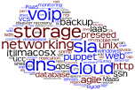

Como ser um
sysadmin
(melhor)
Diego Morales
morales@propus.com.br
 @dgmorales
@dgmorales
Online: http://dgmorales.info/sysadmin
O que vem por aí
- O que a gente faz
- 6 hábitos dos melhores Sysadmins
- Mil e uma maneiras de pedir ajuda
- Invista nas ferramentas do dia-a-dia
- Nosso futuro
- Livros, blogs e podcasts
- O 7º hábito
Acompanhe: http://dgmorales.info/sysadmin
O que a gente faz
6 hábitos dos melhores sysadmins
Gerencie o seu tempo
Dica de leitura: Time Management for Sysadmins
- Também em vídeos: http://www.tomontime.com/
- Uma sinopse e alguns posts relacionados.
Monitore
Não ter monitoramento é viver na Idade das Trevas da TI. Sem ele não há paz.
Automatize

http://xkcd.org/1205/
(veja também o #974)
Atire na cabeça
Não atacar a causa raiz é como dar um "soneca" no problema.
Documente
Não para outros. Mas para você mesmo, no futuro.
Aceite o desconhecido
Existe um problema ou necessidade. Incompreendido. Confuso. Urgente. Você não sabe como resolvê-lo.
Mas vai descobrir.
Mil e uma maneiras de pedir ajuda
work --help
Oráculos
Google
Search help
11
dicas sobre o Google
A MS também documenta
- Ops School Curriculum
- Wikipedia para resumos curtos e objetivos.
- Dê valor ao IRC.
- Ah, eu ia esquecendo: man man.
Invista nas ferramentas do dia-a-dia
Aprenda inglês
A língua nativa do mundo da TI é esta. Não seja um estrangeiro nesse mundo.
O shell não para no /bin/sh
O poder do "shell" está na família de comandos unix.
- find, xargs, grep, sed, awk ...
- ... cat, cut, sort, tr, wc e outros do coreutils.
- Sim, há várias dicas para o bash, mas ...
- o mais importante é o pipe |
{kind=link}
Exemplo
$ sudo lsof | awk '{print $1}' | sort | uniq -c | sort -rn | head
3002 php5-cgi
122 master
116 sshd
115 freeswitc
82 mysqld
60 ssh
60 slapd
52 lighttpd
47 beam.smp
43 inet_geth
Depois do shell vem o quê?
Use controle de versão
Chega de .old, .bak, .bak-20130201, ...
- Version Control Systems (VCS). Há muitos, aprenda um.
- Sugestão: git (livro online).
- Mas eu não sou desenvolvedor!
- Tudo bem, mas que tal manter o /etc versionado? Conheça o etckeeper.
Nosso Futuro
Existe uma revolução em curso, e ela não pode ser parada.
“The benefit of the cloud from an ops side is that it forces us to do what we should be doing anyway – running installation and configuration management.”
Sheeri K. Cabral, no blog da Mozilla.
“Now that installing a computer is an API call, we’re all programmers.”
Tom Limoncelli, em entrevista.
Infrastructure as code
Nosso mundo está cada .. vez .. mais software defined.
- Aprenda a programar. Shell scripting não conta :)
- Aprenda a usar um sistema de gerenciamento de configuração.
Gerenciamento de configuração

Livros, blogs, podcasts
Livros
Blogs
- Todo final de ano: Sysadvent
- Everything Sysadmin
- Puppetlabs Blog
- Packet Pushers
- Highscalability
- LWN
Podcasts
O 7º hábito
Reatividade é o inimigo. E lembre que SEMPRE temos algo pra fazer.
Por hoje é só pessoal!
Contato
Diego Morales
morales@propus.com.br
 @dgmorales
@dgmorales
Slides: http://dgmorales.info/sysadmin
Blog: Do, Automate, Repeat http://doauto.wordpress.com
Mande o seu CV: http://www.propus.com.br/jobs/fisl14